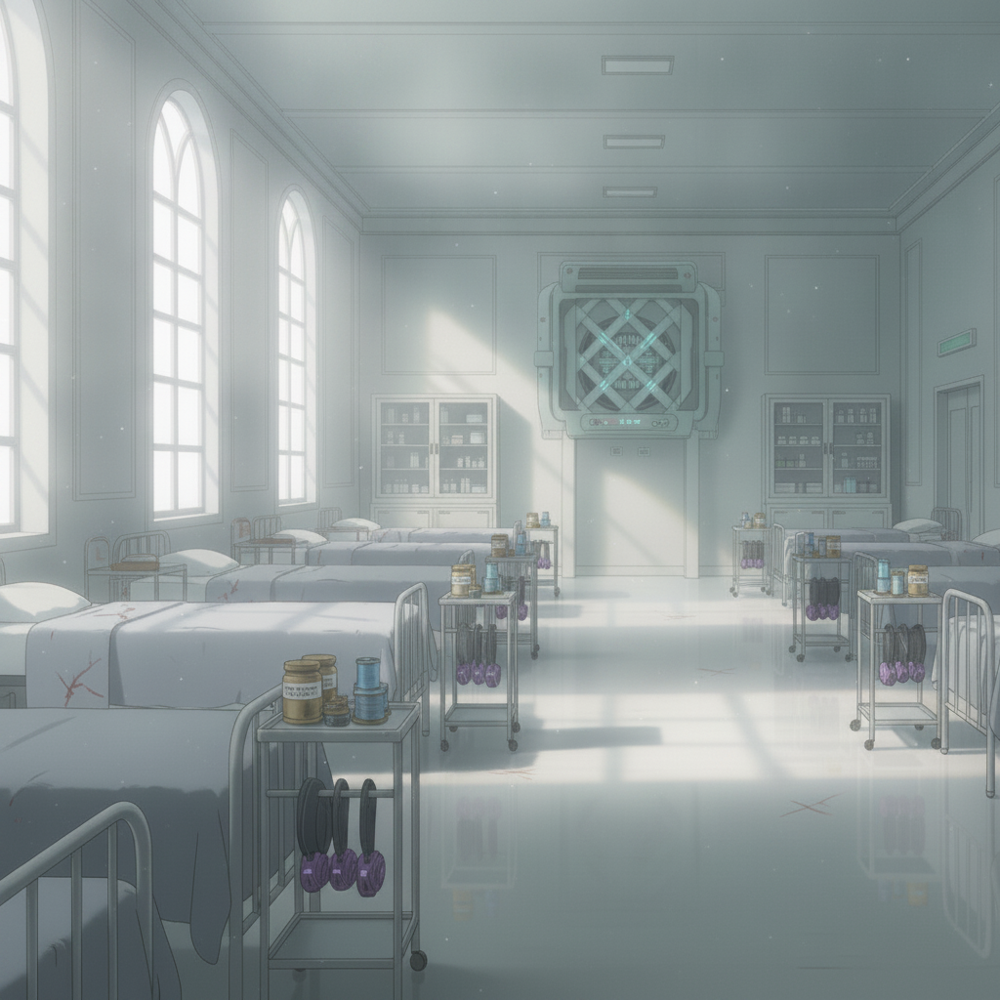
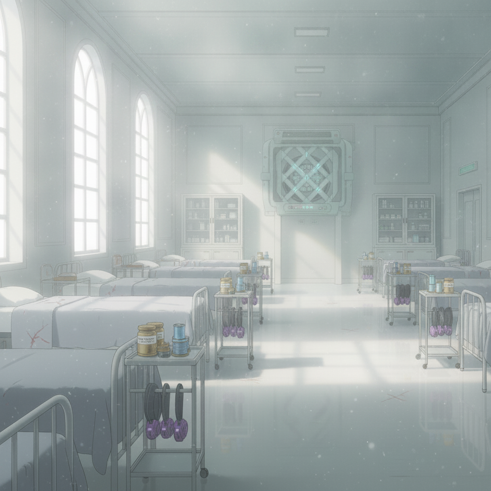
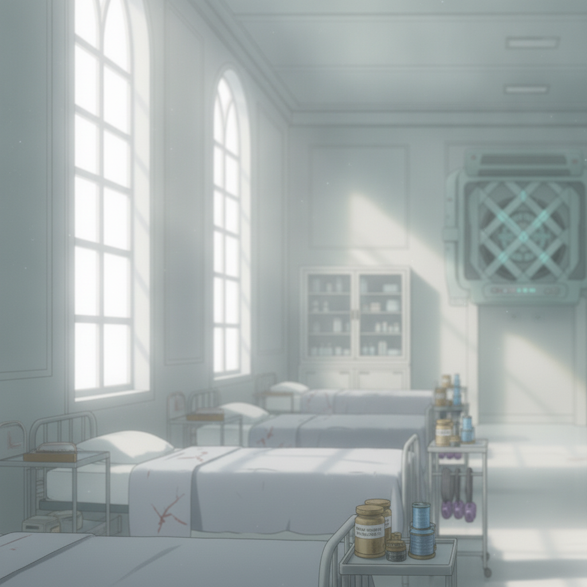

The college infirmary is hushed and sterile. The soft, clean aether-lamp light does little to soothe the sting of our injuries.

Seraphine speaks in low tones with a college dignitary, her poise unwavering. I catch only fragments — rival houses, treaty intrigue, old pacts and new betrayals.

The ambush has pulled me into a conflict far larger than a college test. The world has irrevocably shifted.